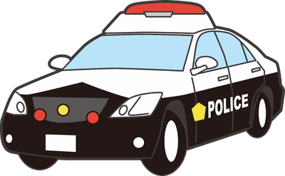
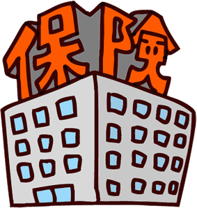
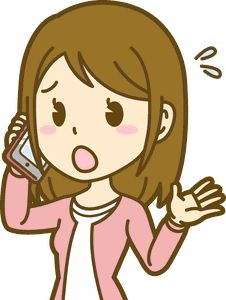
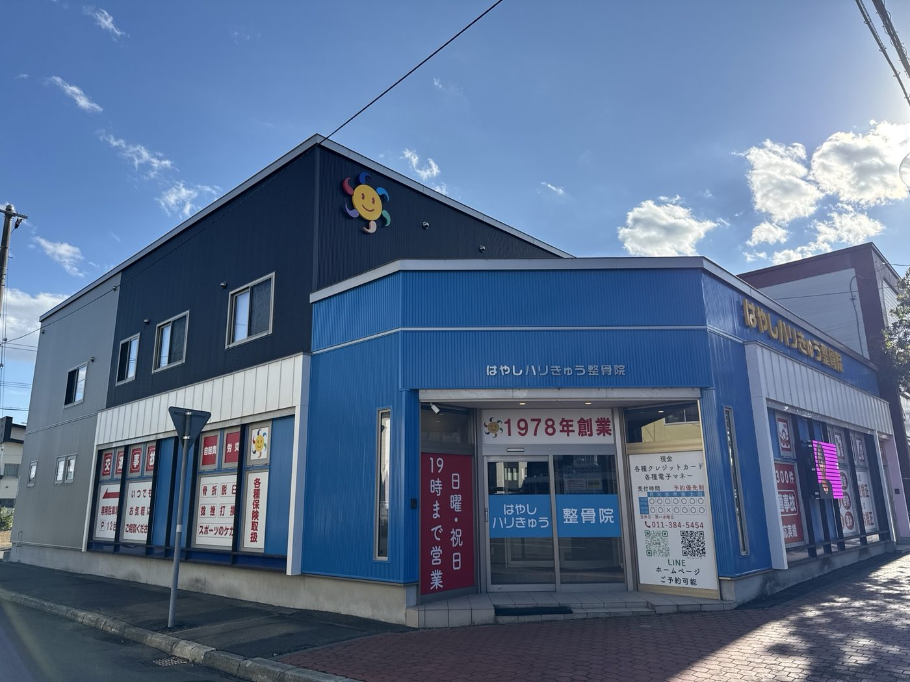

江別市・北広島方面から車で 無料駐車場12台
交通事故でケガをされた方へ
事故のあとは、カラダの痛みに加えて、手続きの不安も重なります。何から始めればいいか、連絡の順番から一緒に確認します。むち打ちなどの痛みは、事故の数日後に出てくることもあります。
お電話の受付：9:00〜12:00／15:00〜19:00 日曜・祝日も受付しています。LINEの返信は受付時間内に順番にお送りします。

事故にあったら
まず、この順番で連絡してください
- 1警察へ連絡軽い事故でも、ケガがあれば「人身事故」として届け出ます。

- 2保険会社へ連絡相手の保険会社（または自分の保険会社）に、事故とケガを伝えます。

- 3病院へ行く前に当院へご相談病院によっては、整骨院との併用をすすめないところもあります。先にご連絡いただければ、当院と一緒に通える提携の整形外科をご紹介します。

- 4提携の整形外科で診察警察へ人身事故として届け出るときや、後遺障害の申請をするときには、医師の診断書が必要です。保険会社へは「はやしハリきゅう整骨院にも通う」と伝えていただきます。伝え方もご案内します。
当院でご相談いただけること
できること
- むち打ち・腰・肩などの、事故によるケガの施術
- 整形外科との併用（通院）の予定づくり
- 保険会社への連絡の仕方のご案内
- 自賠責保険のしくみ・示談までの流れのご説明（総括院長は、整骨院向けに自賠責保険のセミナー講師もしています）
- 提携の整形外科のご紹介
- 平日に通えない方の、日曜・祝日のご予約
当院ではできないこと
- 患者さんに代わって、示談の交渉や保険会社との交渉をすること（法律で弁護士だけが行えます）
- 診断書・後遺障害の診断（医師が行います）
示談のしくみや流れはご説明できます。交渉が必要なときに備えて、ご自分の自動車保険に「弁護士費用特約」が付いているか、確認してみてください。
院内の様子



施術の様子


大切なこと
整形外科にも、間をあけずに通いましょう
整骨院に通っていても、整形外科に長いあいだ行かない期間があると、保険会社から「もう治った」と判断され、補償が打ち切られることがあります。目安は、30日以上あけないことです。
当院では、整形外科に行く日も一緒に予定に入れ、通院の空白ができないようにしています。
- 整形外科：月に1〜2回（診察・経過の確認）
- 当院：痛みの強さに合わせて週に数回
- 次の整形外科の日を当院の予約と一緒に決める
ご相談から通院までの流れ
- STEP 1LINEかお電話でご相談（事故の日、ケガの場所、通っている病院）
- STEP 2保険会社へ、当院に通うことをお伝えいただく
- STEP 3ご来院。問診票（スマホでも書けます）と、カラダの確認
- STEP 4施術。整形外科の予定もふまえて、次回の予約を決める
- STEP 5痛みの変化を記録しながら通院。前日と1時間前にLINEでお知らせ
費用について
相手のいる事故で、自賠責保険が使える場合は、施術費は保険会社から支払われるため、窓口でのお支払いがないことが一般的です。ただし、事故の状況や過失の割合、保険会社との手続きによって変わります。くわしくは、ご相談のときに一緒に確認します。
ご自分の過失が大きい場合や、自損事故の場合などは、健康保険や人身傷害保険を使うこともあります。
よくあるご質問
ほかの整骨院から、途中で移ることはできますか？
できます。保険会社へ「通う整骨院を変える」と伝えていただきます。伝え方はご案内します。
病院に行かずに整骨院だけに通ってもいいですか？
ケガの状態によっては、当院だけで施術を受けられる場合もあります。ただ、保険会社とのやりとりでは医師の診断が必要になることが多いため、提携の整形外科との併用をおすすめしています。どこに行けばいいか迷ったら、病院へ行く前にまずご相談ください。
事故から何日かたって痛くなりました。今からでも相談できますか？
できます。ただし、日がたつほど事故との関係を説明しにくくなるので、まずは早めに当院へご相談ください。必要に応じて、提携の整形外科もご紹介します。
仕事帰りや日曜日にも通えますか？
日曜・祝日も受付しています。受付時間は 9:00〜12:00／15:00〜19:00 です。
子どもを連れて行っても大丈夫ですか？
大丈夫です。キッズスペースはありませんが、バウンサーや赤ちゃんを寝かせられるかごをご用意しています。お気軽にお連れください。